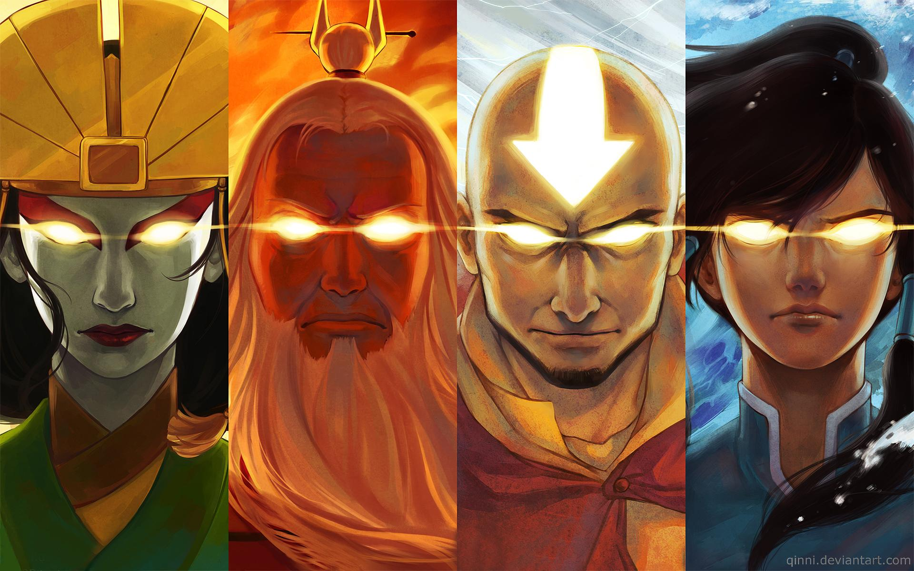
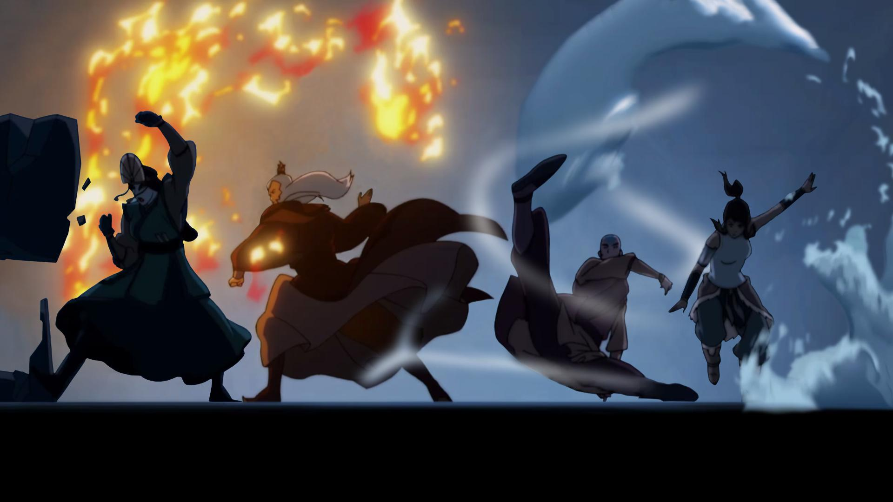

Bryan Konietzko's and Michael Dante DiMartino's Avatar franchise is an American multimedia franchise consisting of two animated television series, a live-action film, comics, books, video games, home media, and soundtracks. The franchise began with the animated television series Avatar: The Last Airbender, which aired on Nickelodeon from 2005 to 2008. The series is set in an Asian-inspired fantasy world in which some people can telekinetically manipulate (or "bend") one of the four classical elements: air, water, earth or fire. Only the titular "Avatar" can bend all four elements and is responsible for maintaining balance in the world.